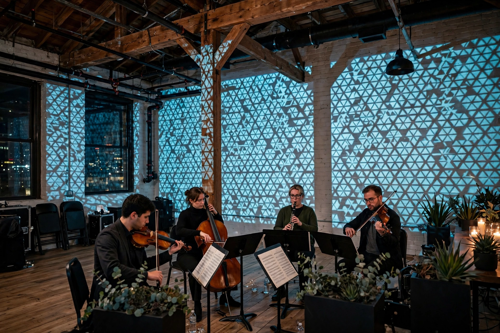

| Minimal music | |
|---|---|
 | |
| Stylistic origins | Experimental music, serialism, non-Western music, jazz |
| Cultural origins | 1960s, United States (New York and San Francisco) |
| Key figures | La Monte Young, Terry Riley, Steve Reich, Philip Glass |
Minimal music (also called minimalism) is a form of art music or compositional practice that employs limited or minimal musical materials. Prominent features include repetition of short phrases with gradual changes over long stretches of time, consonant harmony, steady pulse, drones, and processes such as phasing. It emerged in the downtown New York and West Coast scenes of the 1960s as a reaction against the complexity of academic serialism.
La Monte Young's sustained-tone works of the late 1950s and early 1960s were foundational. Terry Riley's In C (1964), built from 53 short modules repeated freely over a pulsing C, became a landmark. Steve Reich developed "phasing" techniques in tape pieces such as It's Gonna Rain (1965) and applied gradual process to live ensembles in works like Drumming (1971) and Music for 18 Musicians (1976). Philip Glass, working with his own ensemble, composed operas including Einstein on the Beach (1976, with Robert Wilson) using additive rhythmic processes.
Minimalist works often draw on Balinese gamelan, West African drumming, Indian classical music, and jazz. The term, borrowed from visual art and applied by critics including Michael Nyman, was disliked by some of the composers themselves. Later generations — John Adams, Michael Nyman, Arvo Pärt (whose tintinnabuli style is sometimes grouped nearby), and post-minimalists — extended the language; minimalism also strongly influenced rock, electronic dance music, and film scoring.
See also: Terry Riley; Steve Reich; Philip Glass; Postminimalism; Totalism; Process music.